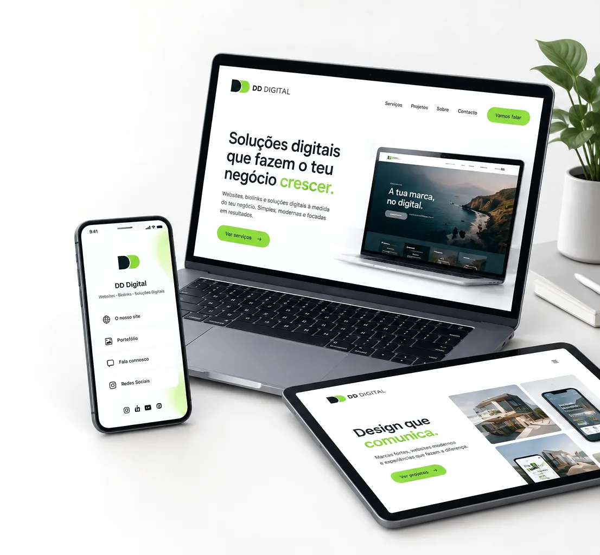
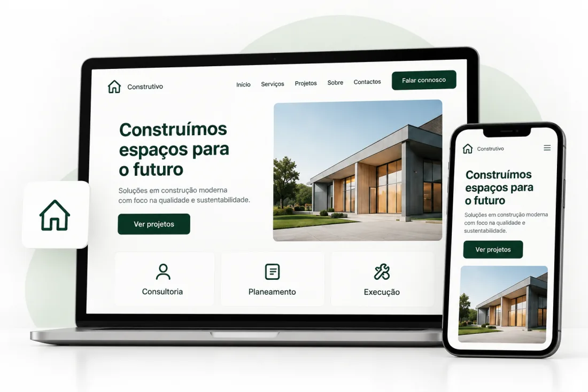
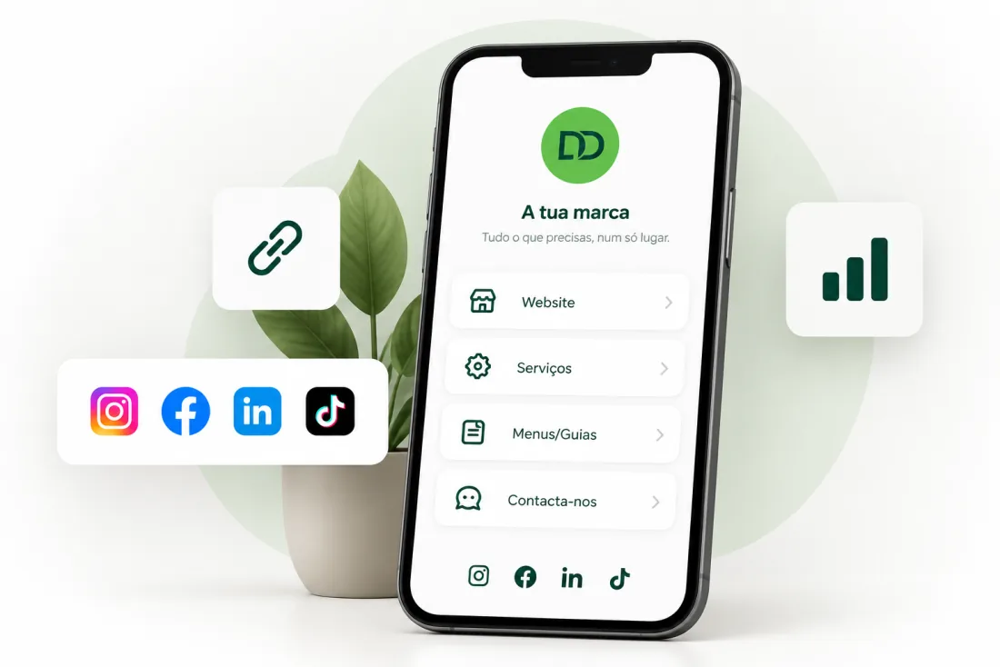
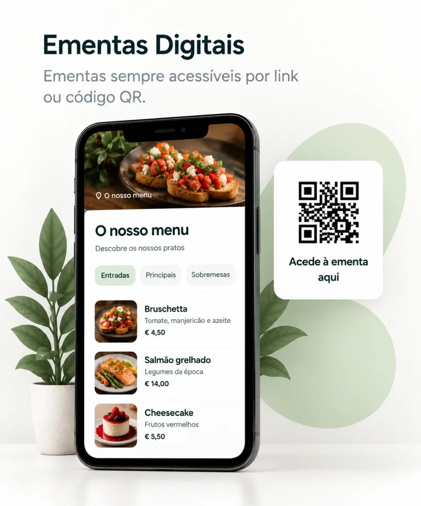
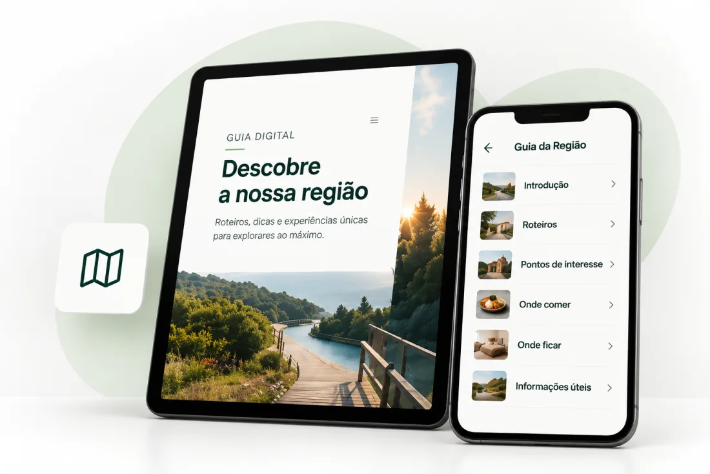
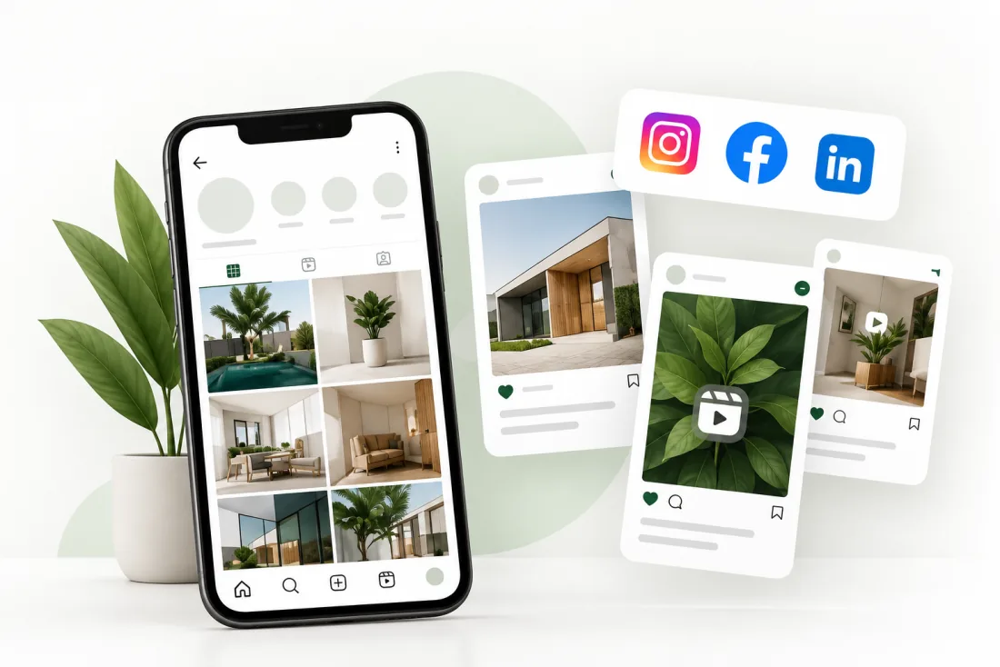
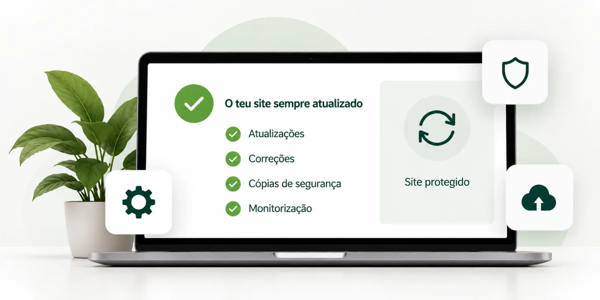
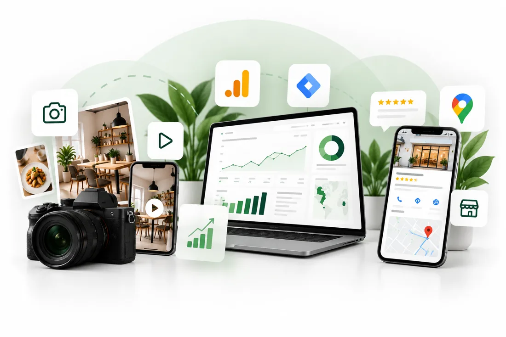

Websites e soluções digitais pensadas para o teu negócio.
Criamos websites, biolinks, ementas e guias digitais à medida do teu negócio. Também te ajudamos a gerir a presença da tua marca nas redes sociais, com soluções pensadas para as tuas necessidades e objetivos.

-
Adaptado ao projeto
Definimos a solução a partir das necessidades, dos objetivos e das características do teu negócio. -
Pensado para diferentes ecrãs
Nos websites, trabalhamos a apresentação e a navegação para diferentes tamanhos de ecrã. -
Condições claras
Explicamos as opções disponíveis, o que está incluído e as condições de cada projeto.
Websites, biolinks e soluções digitais para o teu negócio
Cada negócio tem necessidades diferentes. Criamos soluções digitais para apresentar o teu negócio, disponibilizar informação útil e tornar os teus serviços mais acessíveis aos teus clientes.
Sites institucionais
Soluções para diferentes necessidades, desde páginas focadas num objetivo específico a websites com várias secções.
Landing Page
Uma página criada para apresentar um serviço, divulgar uma campanha ou captar pedidos de contacto, com conteúdo organizado em função do objetivo do teu negócio.
- Conteúdo organizado em função do objetivo da página
- Design responsivo
- Chamadas à ação e formulário de contacto, quando aplicável
One-Page
Apresenta o teu negócio, os serviços, os contactos e outras informações importantes numa única página, organizada por secções.
- Conteúdo organizado por secções
- Navegação simples entre secções
- Adequado para negócios com informação que pode ser reunida numa só página
- Conteúdo estruturado para facilitar a leitura nos motores de pesquisa
Website Pro
Um website com mais páginas para negócios que precisem de apresentar diferentes serviços, áreas ou conteúdos com maior detalhe.
- Até 6 páginas dedicadas aos conteúdos do teu negócio
- Conteúdos organizados de acordo com as necessidades do projeto
- Navegação consistente entre páginas

Biolinks
Uma página com ligações para os teus canais, serviços, contactos e outros conteúdos relevantes, personalizada de acordo com a identidade da tua marca.
- Várias ligações organizadas numa só página
- Personalização adequada à tua marca
- Possibilidade de utilizar domínio próprio ou um endereço associado à DD Digital, conforme opção escolhida

Soluções digitais
Disponibiliza ementas e guias digitais aos teus clientes, com informação organizada e acessível online.
Ementas
Disponibiliza a ementa do teu estabelecimento através de um código QR. Os clientes podem consultar os pratos e as informações que disponibilizares diretamente no telemóvel.
- Acesso à ementa através de código QR ou ligação
- Apresentação visual adaptada à identidade do estabelecimento
- Consulta em dispositivos móveis
- Possibilidade de utilizar domínio próprio ou um endereço associado à DD Digital, conforme opção escolhida
Guias
Guias digitais para partilhar com os teus clientes ou hóspedes, com informação útil, regras, recomendações e contactos num só lugar.
- Informação organizada num só local
- Acesso através de código QR ou ligação
- Apresentação visual alinhada com a identidade da marca
- Possibilidade de utilizar domínio próprio ou um endereço associado à DD Digital, conforme opção escolhida


Precisas de outra solução digital?
Se tens outra ideia em mente, conta-nos o que precisas. Podemos avaliar contigo a possibilidade de desenvolver uma solução adequada ao teu projeto.
Gestão de redes sociais
Conteúdo e gestão para manter as tuas redes sociais ativas, sem ter de tratar disso sozinho.
Social Media Lite
Uma solução prática para manter a tua marca ativa nas redes sociais, com conteúdos consistentes e uma comunicação alinhada com o teu negócio.
- 4 publicações por mês para Instagram e Facebook.
- Copywriting e design criativo adaptados à identidade da marca.
- Planeamento estratégico e organização dos conteúdos.
- Análise mensal das principais métricas, com uma breve síntese do desempenho.
Social Media Pro
Uma gestão de conteúdos mais abrangente, com maior frequência de publicação e uma análise aprofundada para apoiar as decisões futuras.
- 12 publicações por mês para Instagram e Facebook.
- Copywriting e design criativo alinhados com a comunicação da marca.
- Planeamento estratégico e organização dos conteúdos.
- Análise mensal detalhada, comparação da evolução e recomendações para o planeamento seguinte.

Manutenção de websites
Depois do site estar no ar, continuamos por perto — atualizações, correções e pequenas melhorias.
Semestral
Um plano de acompanhamento com revisões periódicas e pequenas atualizações, para ajudar a manter o teu site atualizado e adequado às necessidades do teu negócio.
- Revisão semestral do site e dos seus principais elementos.
- Backups mensais, conforme as condições técnicas do projeto.
- Pequenas alterações de conteúdo.
- Acompanhamento durante 6 meses, com verificação do estado geral do site.
Anual
Um acompanhamento contínuo ao longo do ano, com revisões, atualizações de conteúdo e pequenas melhorias ajustadas às necessidades do teu negócio.
- Revisões periódicas do site ao longo do ano.
- Backups mensais, conforme as condições técnicas do projeto.
- Pequenas alterações de conteúdo.
- Acompanhamento durante 12 meses, com atenção à evolução e ao estado geral do site.

Nota: Alterações profundas e de design, criação de novas páginas e secções não estão incluídas. Sob consulta.
Serviços complementares
Mais do que criar, ajudamos a otimizar a tua presença digital com conteúdos profissionais, acompanhamento de dados e gestão da tua visibilidade no Google.
- Captação de foto e vídeo, com edição profissional
- Analytics / GTM
(implementação e acompanhamento mensal) - Criação e gestão do Google Business Profile

Da primeira conversa à solução final
Um processo claro para perceber o que precisas, definir o projeto e desenvolver uma solução adequada ao teu negócio.
Perceber o que precisas
Falamos sobre o teu negócio, a tua marca, os teus objetivos e aquilo que pretendes desenvolver.
Definir a solução
Analisamos as necessidades do projeto, definimos o que será desenvolvido e apresentamos as condições do serviço.
Dar forma ao projeto
Desenvolvemos a solução de acordo com o que foi definido e acompanhamos contigo os pontos que precisam de validação.
Concluir a entrega
Concluímos o projeto e entregamos a solução definida, de acordo com as condições acordadas.
Tecnologia simples, resultado sério
Soluções digitais com um propósito claro
Cada projeto começa por perceber o que precisas e termina com a entrega da solução. Pelo meio definimos o que faz sentido desenvolver e como o vamos concretizar.
Adaptado às tuas necessidades
Definimos a solução a partir do que pretendes, dos conteúdos necessários e das funcionalidades desejadas.
Menos peso. Mais liberdade.
Desenvolvemos com HTML, CSS e JavaScript, evitando dependências desnecessárias para criar soluções rápidas, eficientes e adaptadas ao teu negócio.
Comunicação clara
Explicamos o que está previsto no projeto, quais são as opções disponíveis e o que é necessário para avançar.
Condições definidas antes de começar
Definimos o que será desenvolvido, o que está incluído no serviço e quais são as condições acordadas.
Digital, sem complicar
Sem complicações técnicas
Sempre ao teu lado
Soluções adaptadas ao teu negócio
Ainda com dúvidas?
As perguntas que mais nos fazem antes de começar um projeto.
Quanto tempo demora a criação de um website ou solução digital?
O domínio fica em meu nome?
Preciso de comprar um domínio para uma ementa ou um guia?
Consigo editar o site ou a solução digital sozinho depois de estar pronto?
Já tenho domínio. Conseguem ligá-lo ao novo site?
A gestão de redes sociais garante mais seguidores ou vendas?
Tenho de fornecer os textos e as imagens?
Os websites incluem otimização para motores de pesquisa (SEO)?
O que acontece quando termina o período de manutenção?
Como funciona o pagamento? Posso pagar em prestações?
Vamos começar o teu projeto
Preenche o formulário com alguns detalhes ou contacta-nos diretamente. Entraremos em contacto contigo assim que possível.